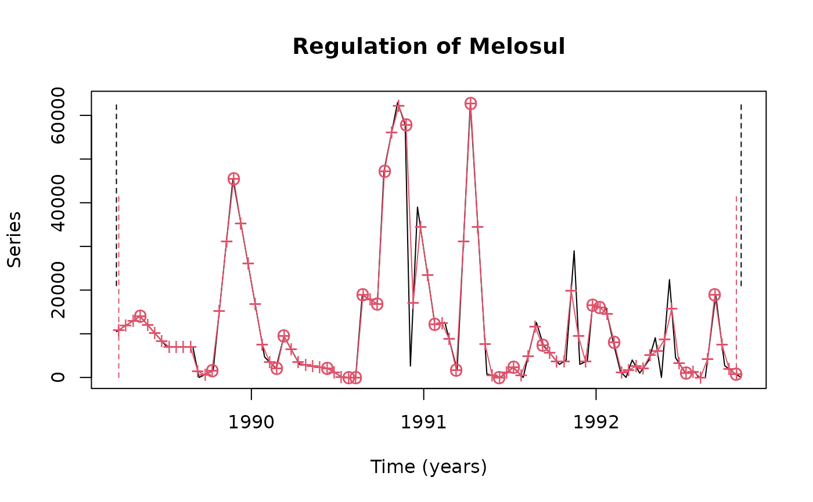

Regulation of one or several time series using various methods
regul.RdRegulate irregular time series or regular time series with gaps. Create a regul object from whose one or several regular time series can be extracted using extract() or tseries(). This is the function to apply most of the time to create regular time series ('rts' objects in Splus or 'ts' objects in R) that will be further analyzed by other functions that apply to regular time series.
regul(x, y=NULL, xmin=min(x), n=length(x), units="days", frequency=NULL,
deltat=1/frequency, datemin=NULL, dateformat="m/d/Y", tol=NULL,
tol.type="both", methods="linear", rule=1, f=0, periodic=FALSE,
window=(max(x) - min(x))/(n - 1), split=100, specs=NULL)
# S3 method for class 'regul'
print(x, ...)
# S3 method for class 'regul'
summary(object, ...)
# S3 method for class 'summary.regul'
print(x, ...)
# S3 method for class 'regul'
plot(x, series=1, col=c(1, 2), lty=c(par("lty"), par("lty")), plot.pts=TRUE,
leg=FALSE, llab=c("initial", x$specs$methods[series]), lpos=c(1.5, 10),
xlab=paste("Time (", x$units, ")", sep = ""), ylab="Series",
main=paste("Regulation of", names(x$y)[series]), ...)
# S3 method for class 'regul'
lines(x, series=1, col=3, lty=1, plot.pts=TRUE, ...)
# S3 method for class 'regul'
identify(x, series=1, col=3, label="#", ...)
# S3 method for class 'regul'
hist(x, nclass=30, col=c(4, 5, 2),
xlab=paste("Time distance in", x$units, "with start =", min(x$x),
", n = ", length(x$x), ", deltat =", x$tspar$deltat),
ylab=paste("Frequency, tol =", x$specs$tol),
main="Number of matching observations", plotit=TRUE, ...)
# S3 method for class 'regul'
extract(e, n, series=NULL, ...)
# S3 method for class 'regul'
specs(x, ...)
# S3 method for class 'specs.regul'
print(x, ...)Arguments
- x
for regul: a vector containing times at which observations are sampled in the initial irregular time series. It can be expressed in any unit ("years", "days", "weeks", "hours", "min", "sec",...) as defined by the argument
units. It is often expressed in "days" and the decimal part represents the part of the day, that is the time in hour:min:sec (dates coming from Excel, or even standard dates in S+ or R are expressed like that). For the methods, a 'tsd' object- y
a vector (single series) or a matrix/data frame whose columns correspond to the various irregular time series to regulate. Rows are observations made at corresponding times in
x. The number of rows must thus match the length of vectorx- xmin
allows to respecify the origin of time in
x. By default, the origin is not redefined and thus, the smallest value inxis used- n
the number of observations in the regular time series. By default, it is the same number than in the original irregular time series (i.e.,
length(x)- units
the time unit for the
xvector. By defaultunits="days". A special value,units="daystoyears"indicates thatxis expressed in "days" (1 unit = 1 day) but that we want to obtain the final regular time series expressed in "years" (1 unit = 1 year). Give a correct value fordateminto make sure the right fraction of the year is computed for each observation (see example hereunder)- frequency
the frequency of the regulated time series in the corresponding time unit. For instance,
frequency=12withunits="years"means montly sampled observations. Warning! When usingunits="daystoyears", specifyfrequency(ordeltat) in years!- deltat
the interval between two observations in the regulated time series. It is the inverse of
frequency. If bothfrequencyanddeltatare provided, thenfrequencysupersedesdeltat- datemin
this is mostly useful for converting "days" in "years" time-scales (
units="daystoyears"). If thexvector contains: 1, 3, 6,... (day 1, day 3, day 6... of the experiment), one can give here the exact date of the first observation, allowing to define a correct origin in the "years" time scale. Provide a string in a format compatible withdateformat. For instance, if day 1 is the 21th March 1998, givedatemin="03/21/1998"withdateformat="m/d/Y"- dateformat
indicate how
dateminis formatted. For instance:"d/m/Y", or"m/d/Y"(by default), seedaystoyears()for more info on date formatting- tol
the tolerance in the time-scale to determine if a measured value is used to approximate a regulated value. If
tol=0, observations in each respective series must match exactly, otherwise observations in the regulated series are interpolated.tolmust be a round fraction ofdeltat(deltat, deltat/2, deltat/3, etc...), and cannot be larger than it, otherwise,tolis automatically adjusted to the closest allowed value. By default,tol=NULL. This is equivalent totol=0. Warning! In the particular case ofunits="daystoyears",tolmust be expressed in the original time-scale, that is "days", whiledeltatmust be expressed in the final time-scale, that is "years"!- tol.type
the type of adjustment to use for the time-tolerance:
"left","right","both"(by default) or"none". Iftol.type="left", correspondingxvalues are seeked in a window ]xregul-tol, xregul]. Iftol.type="right", they are seeked in the window [xregul, xregul+tol[. Iftol.type="both", then they are seeked in the window ]xregul-tol, xregul+tol]. If several observations are in this window, the closest one is used. Finally, iftol.type="none", then all observations in the regulated time series are interpolated (even if exactly matching observations exist!)- methods
the method(s) to use to regulate the time series. Currently, it can be:
"constant","linear","spline"or"area"(or a unique abbreviation of them). If several time series are provided (yis a matrix or a data frame), it is possible to define methods individually for each series. For instance,methods=c("l", "a", "s")defines the "linear" method for the first series, the "area" method for the second one, the "spline" method for the third one,... and again the "linear" for the fourth, the "area" for the fifth one, etc. (recycling rule). By default, the "linear" method is selected for all series- rule
the rule to use for extrapolated values (observations in the final regular time series that are outside the range of observed values in the initial time series). With
rule=1(by default), these entries are not calculated and get NA; withrule=2, these entries are extrapolated (avoid using this option, or use with extreme care!!!)- f
parameter for the
"constant"regulation method. Coefficient giving more weight to the observation at left (f=0, by default), to the observation at right (f=1), or give an intermediate weight to both of these observations (0 < f < 1) during the interpolation (seereglin()- periodic
parameter for the
"spline"regulation method. Indicate if the time series should be considered as periodic (periodic=TRUE, first value must be equal to the last one). If this is the case, first and second derivates used to calculate spline segments around first and last observations use data in the other extreme of the series. In the other case (periodic=FALSE, by default), derivates for extremes observations are considered to be equal to zero- window
parameter for the
"area"regulation method. Size of the window to consider (seeregarea()). By default, the mean interval between observations in the initial irregular time series is used. Give the same value as for deltat for working with adjacent windows- split
other parameter for the
"area"method. To optimize calculation time and to avoid to saturate memory, very long time series are splitted into smaller subunits (seeregarea()). This is transparent for the user. The default value ofsplit=100should be rarely changed. Give a lower value if the program fails and reports a memory problem during calculation- specs
a
specs.regulobject returned by the functionspecs()applied to aregulobject. Allows to collect parameterization of theregul()function and to apply them to another regulation- object
A
regulobject as obtained after using theregul()function- e
A
regulobject as obtained after using theregul()function- series
the series to plot. By default,
series=1, corresponding to the first (or possibly the unique) series in theregulobject- col
(1) for
plot(): the two colors to use to draw respectively the initial irregular series and the final regulated series.col=c(1,2)by default. (2) forhist(): the three colors to use to represent respectively the fist bar (exact coincidence), the middle bars (coincidence in a certain tolerance window) and the last bar (values always interpolated). By default,col=c(4,5,2)- lty
the style to use to draw lines for the initial series and the regulated series, respectively. The default style is used for both lines if this argument is not provided
- plot.pts
if
plot.pts=TRUE(by default) then points are also drawn for the regulated series (+). Those points that match observations in the initial irregular series, and are not interpolated, are further marked with a circle- leg
do we add a legend to the graph? By default,
leg=FALSE, no legend is added- llab
the labels to use for the initial irregular and the final regulated series, respectively. By default, it is
"initial"for the first one and the name of the regulation method used for the second one (seemethodsargument)- lpos
the position of the top-left corner of the legend box (x,y), in the graph coordinates
- xlab
the label of the x-axis
- ylab
the label of the y-axis
- main
the main title of the graph
- label
the character to use to mark points interactively selected on the graph. By default,
label="#"- nclass
the number of classes to calculate in the histogram. This is indicative and this value is automatically adjusted to obtain a nicely-formatted histogram. By default,
nclass=30- plotit
If
plotit=TRUEthen the histogram is plotted. Otherwise, it is only calculated- ...
additional parameters
Details
Several irregular time series (for instance, contained in a data frame) can be treated at once. Specify a vector with "constant", "linear", "spline" or "area" for the argument methods to use a different regulation method for each series. See corresponding fonctions (regconst(), reglin(), regspline() and regarea()), respectively, for more details on these methods. Arguments can be saved in a specs object and reused for other similar regulation processes. Functions regul.screen() and regul.adj() are useful to chose best time interval in the computed regular time series. If you want to work on seasonal effects in the time series, you will better use a "years" time-scale (1 unit = 1 year), or convert into such a scale. If initial time unit is "days" (1 unit = 1 day), a conversion can be operated at the same time as the regulation by specifying units="daystoyears".
Value
An object of type 'regul' is returned. It has methods print(), summary(), plot(), lines(), identify(), hist(), extract() and specs().
References
Lancaster, P. & K. Salkauskas, 1986. Curve and surface fitting. Academic Press, England, 280 pp.
Fox, W.T. & J.A. Brown, 1965. The use of time-trend analysis for environmental interpretation of limestones. J. Geol., 73:510-518.
Ibanez, F., 1991. Treatment of the data deriving from the COST 647 project on coastal benthic ecology: The within-site analysis. In: B. Keegan (ed). Space and Time Series Data Analysis in Coastal Benthic Ecology. Pp 5-43.
Ibanez, F. & J.C. Dauvin, 1988. Long-term changes (1977-1987) on a muddy fine sand Abra alba - Melinna palmata population community from the Western English Channel. J. Mar. Ecol. Prog. Ser., 49:65-81.
See also
Examples
data(releve)
# The series in this data frame are very irregularly sampled in time:
releve$Day
#> [1] 1 51 108 163 176 206 248 315 339 356 389 449 480 493 501
#> [16] 508 522 554 568 597 613 624 639 676 697 723 751 786 814 842
#> [31] 863 877 891 906 922 940 954 971 983 999 1010 1027 1038 1054 1069
#> [46] 1081 1094 1110 1129 1143 1156 1173 1186 1207 1226 1235 1249 1271 1290 1314
#> [61] 1325
length(releve$Day)
#> [1] 61
intervals <- releve$Day[2:61]-releve$Day[1:60]
intervals
#> [1] 50 57 55 13 30 42 67 24 17 33 60 31 13 8 7 14 32 14 29 16 11 15 37 21 26
#> [26] 28 35 28 28 21 14 14 15 16 18 14 17 12 16 11 17 11 16 15 12 13 16 19 14 13
#> [51] 17 13 21 19 9 14 22 19 24 11
range(intervals)
#> [1] 7 67
mean(intervals)
#> [1] 22.06667
# The series must be regulated to be converted in a 'rts' or 'ts object
rel.reg <- regul(releve$Day, releve[3:8], xmin=9, n=63, deltat=21,
tol=1.05, methods=c("s","c","l","a","s","a"), window=21)
rel.reg
#> Regulation of, by "method" :
#> Astegla Chae Dity Gymn Melosul Navi
#> "s" "c" "l" "a" "s" "a"
#>
#> Arguments for "methods" :
#> tol.type tol rule f periodic window split
#> "both" "1.05" "1" "0" "FALSE" "21" "100"
#>
#> 44 interpolated values on 63 ( 0 NAs padded at ends )
#>
#> Time scale :
#> start deltat frequency
#> 9.00000000 21.00000000 0.04761905
#> Time units : days
#>
#> call : regul(x = releve$Day, y = releve[3:8], xmin = 9, n = 63, deltat = 21, tol = 1.05, methods = c("s", "c", "l", "a", "s", "a"), window = 21)
plot(rel.reg, 5)
specs(rel.reg)
#> xmin n frequency deltat
#> 9 63 0.0476190476190476 21
#> units dateformat tol tol.type
#> days m/d/Y 1.05 both
#> methods1 methods2 methods3 methods4
#> s c l a
#> methods5 methods6 rule f
#> s a 1 0
#> periodic window split
#> FALSE 21 100
# Now we can extract one or several regular time series
melo.ts <- extract(rel.reg, series="Melosul")
is.tseries(melo.ts)
#> [1] TRUE
# One can convert time-scale from "days" to "years" during regulation
# This is most useful for analyzing seasonal cycles in a second step
melo.regy <- regul(releve$Day, releve$Melosul, xmin=6, n=87,
units="daystoyears", frequency=24, tol=2.2, methods="linear",
datemin="21/03/1989", dateformat="d/m/Y")
#> A 'tol' of 2.2 in 'days' is 0.00602327173169062 in 'years'
#> 'tol' was adjusted to 0.00595238095238083
#>
melo.regy
#> Regulation of, by "method" :
#> Series
#> "linear"
#>
#> Arguments for "methods" :
#> tol.type tol rule f
#> "both" "2.2" "1" "0"
#> periodic window split
#> "FALSE" "15.3953488372093" "100"
#>
#> 63 interpolated values on 87 ( 0 NAs padded at ends )
#>
#> Time scale :
#> start deltat frequency
#> 2.109000e+03 4.166667e-02 2.400000e+01
#> Time units : years
#>
#> call : regul(x = releve$Day, y = releve$Melosul, xmin = 6, n = 87, units = "daystoyears", frequency = 24, datemin = "21/03/1989", dateformat = "d/m/Y", tol = 2.2, methods = "linear")
plot(melo.regy, main="Regulation of Melosul")

# In this case, we have only one series in 'melo.regy'
# We can use also 'tseries()' instead of 'extract()'
melo.tsy <- tseries(melo.regy)
is.tseries(melo.tsy)
#> [1] TRUE